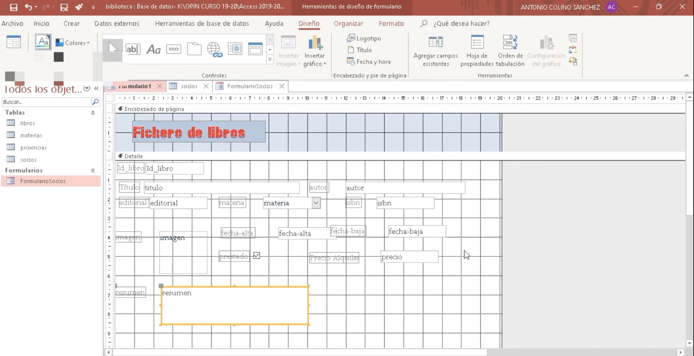

Objetivos
- Comprender la utilidad de las consultas para obtener información concreta de una base de datos.
- Aprender a crear consultas de selección y consultas con criterios en Microsoft Access.
- Conocer el uso de los formularios como herramienta para introducir y modificar datos de forma eficiente.
- Crear consultas y formularios vinculados a la base de datos de la biblioteca del centro.
- Iniciar el desarrollo del Producto final 1: infografía digital, relacionada con la introducción de nuevos títulos en la base de datos.
1. Consultas
Las consultas permiten seleccionar y mostrar información específica almacenada en una base de datos, facilitando su análisis y uso en contextos administrativos reales. A través de las consultas es posible filtrar datos, ordenar la información y obtener resultados concretos a partir de uno o varios criterios.
En esta sesión se trabajarán las consultas de selección, que permiten visualizar determinados datos de una o varias tablas, y las consultas con criterios, que sirven para filtrar la información según condiciones concretas, como la disponibilidad de libros, autores o fechas. Por ejemplo, una consulta puede mostrar únicamente los libros disponibles en la biblioteca o los préstamos realizados en un periodo determinado.
El alumnado observará una demostración guiada por parte del docente y, posteriormente, realizará consultas aplicadas a la base de datos de la biblioteca del centro, comprendiendo su utilidad práctica para la gestión de la información.
2. Formularios
Los formularios son una herramienta que facilita la introducción y modificación de datos en una base de datos, ya que presentan la información de forma clara y estructurada, reduciendo errores y agilizando el trabajo.
Durante esta parte de la sesión, el alumnado aprenderá a crear formularios vinculados a las tablas de la base de datos de la biblioteca. Estos formularios permitirán introducir nuevos títulos y actualizar la información existente de manera sencilla y ordenada. Tras una explicación inicial y una demostración práctica, cada alumno o alumna diseñará al menos un formulario operativo para su base de datos en Microsoft Access.

Producto final 1. Infografía.
Además del trabajo con consultas y formularios, en esta sesión se iniciará el desarrollo del Producto final 1: una infografía digital. En ella se explicará, de forma clara y visual, cómo introducir nuevos títulos en la base de datos de la biblioteca del centro.
El alumnado comenzará a planificar el contenido de la infografía, identificando los pasos necesarios para la introducción de datos y organizando la información de manera comprensible. Para su elaboración se utilizará Canva u otra aplicación digital similar que el alumnado considere adecuada, siempre que permita crear una infografía clara, visual y, preferentemente, con algún elemento interactivo.
Este trabajo servirá para conectar el uso práctico de Microsoft Access con la comunicación visual de los aprendizajes adquiridos.
Se entregará a la finalización de la sesión 5 a través de la tarea de Teams habilitada para tal fin.
Rúbrica
| 4 Excelente | 3 Satisfactorio | 2 Mejorable | 1 Insuficiente | |
|---|---|---|---|---|
| Patrón organizativo | Están presentes todos los elementos propios de una infografía (título, estructura clara, textos breves, imágenes, fuentes y créditos). La información visual y textual está perfectamente equilibrada. (4) | Están presentes todos los elementos propios de una infografía y la información visual y textual está bastante bien equilibrada. (3) | Falta alguno de los elementos característicos de una infografía y/o no existe un buen equilibrio entre texto e imagen. (2) | Solo aparecen uno o dos elementos propios de una infografía y la información visual y textual no está equilibrada. (1) |
| Diseño visual | La información está distribuida de forma muy atractiva. Uso armónico de colores, tipografía adecuada y excelente legibilidad. (4) | La información está bien distribuida, con colores adecuados y tipografía legible. (3) | La distribución resulta poco atractiva y/o los colores o la tipografía no son los más adecuados. (2) | El diseño no resulta atractivo, los colores no son adecuados y la tipografía dificulta la lectura. (1) |
| Contenido técnico | Explica con total claridad todos los pasos necesarios para introducir nuevos títulos en la base de datos de la biblioteca usando Microsoft Access. (4) | Explica de forma clara la mayoría de los pasos necesarios para introducir nuevos títulos en la base de datos. (3) | Explica solo algunos pasos básicos, faltando información relevante. (2) | No explica correctamente el proceso de introducción de nuevos títulos en la base de datos. (1) |
| Elementos visuales y licencias | Las imágenes e iconos utilizados son adecuados, tienen licencia CC o son propios, presentan buena calidad y apoyan claramente el contenido. (4) | Las imágenes utilizadas son adecuadas, tienen licencia CC o son propias y apoyan el contenido. (3) | No todas las imágenes tienen licencia CC y/o no apoyan claramente el contenido. (2) | La mayoría de las imágenes no tienen licencia CC, son inadecuadas o no guardan relación con el contenido. (1) |
| Corrección lingüística y claridad | No se observan errores ortográficos ni gramaticales. El lenguaje es claro, inclusivo y adecuado al contexto. (4) | Aparecen uno o dos errores leves. El lenguaje es comprensible y adecuado. (3) | Aparecen varios errores ortográficos o gramaticales que dificultan parcialmente la comprensión. (2) | Presenta numerosos errores que dificultan la comprensión del contenido. (1) |
- Actividad
- Nombre
- Fecha
- Puntuación
- Notas
- Reiniciar
- Imprimir
- Aplicar
- Ventana nueva
Vídeos explicativos
Actividad entregable
Entregar a través de la tarea que abriré en Teams lo siguiente:
Tarea: Crear 2 consultas y 1 formulario,
Entrega: subir captura + archivo .accdb